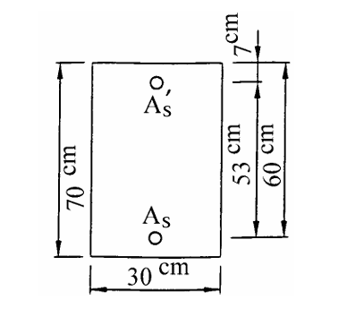
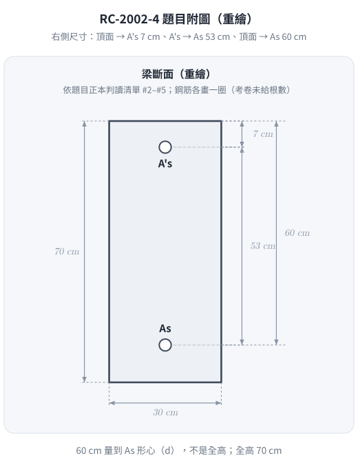
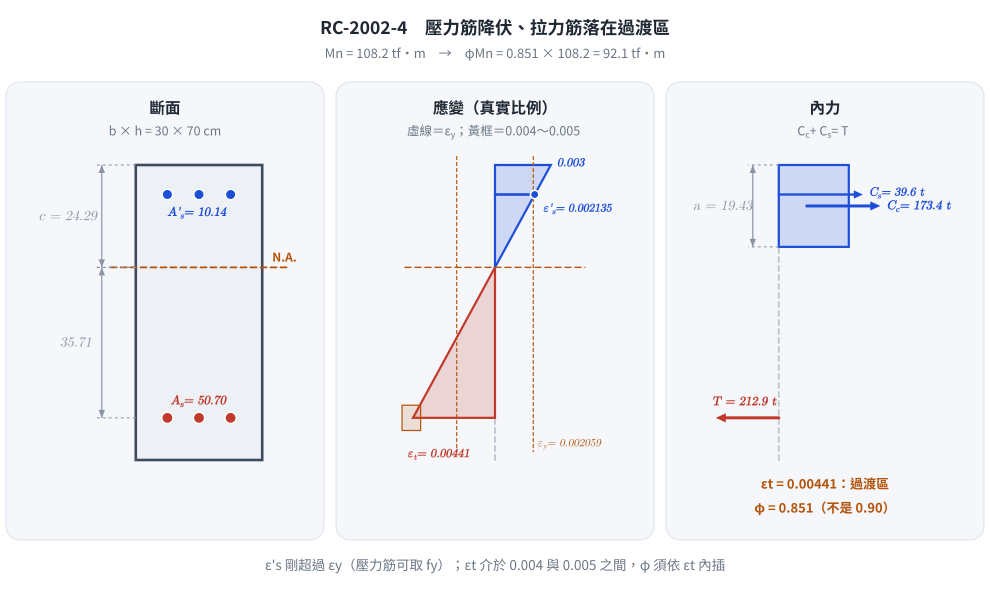

📄 題目正本：考卷原文・附圖・判讀清單（已確認）
RC-2002-4 題目正本
本檔只記錄考卷上寫了什麼、圖上畫了什麼，不含任何解法。解析見同資料夾
RC-2002-4.md。
判讀清單已經使用者確認（凍結）；本檔原則上不再修改（改動須回考卷原圖並記 log）。
| 項目 | 內容 |
|---|---|
| 考卷 | raw/exams/RC-2002_鋼筋混凝土設計與預力.pdf 第 2 頁（全一張之背面），第四題 |
| 考年 | 民國 91 年（2002） |
| 配分 | 20 分 |
| 附圖 | RC-2002-4-fig-1.png（梁斷面圖） |
| 判讀狀態 | 已確認（2026-11-12 使用者確認；影響答案項目 #9 使用者選 φ 依 εt（淨拉應變體系）；轉錄 2026-11-12，PyMuPDF 110 dpi 全頁目視＋抽出文字核對，附圖 450 dpi、「強度」後符號 600 dpi 放大；盲讀後才比對既有解析） |
1. 考卷原文（逐字）
四、一矩形 RC 梁斷面如圖示，已知寬度 $b=30$ cm，有效深度 $d=60$ cm，$h=70$ cm，$d'=7$ cm，$f'_c=350$ kgf/cm²，$f_y=4200$ kgf/cm²，$A_s=50.70$ cm²，$A'_s=10.14$ cm²，$E_s=2040000$ kgf/cm²，試求此斷面之彎矩設計強度 $\phi M_n$。下列公式可供參考使用，$f'_c, f_y$：kgf/cm²
$\rho_b = 0.85\beta_1 \dfrac{f'_c}{f_y}\dfrac{6120}{6120+f_y}$ $A_{s,\min}=\dfrac{14}{f_y}b_w d$ $A_{s,\min}=\dfrac{0.8\sqrt{f'_c}}{f_y}b_w d$
（20 分）
註：「彎矩設計強度」與 $M_n$ 之間的符號在 PDF 中是一個嵌入小點陣圖（Im3），印出來像兩個注音形狀的殘字，是 $\phi$ 字型替代失敗；依「設計強度」判讀為 $\phi M_n$（見判讀清單 #1）。
2. 考卷給的公式、附表與參數
- 題文數值：$b=30$、$d=60$、$h=70$、$d'=7$ cm；$f'_c=350$、$f_y=4200$ kgf/cm²；$A_s=50.70$、$A'_s=10.14$ cm²；$E_s=2.04\times10^6$ kgf/cm²。
- 參考公式：$\rho_b$、兩條 $A_{s,\min}$（如上）。
- 沒有給：$\beta_1$ 的計算式或數值、混凝土極限應變 $\varepsilon_{cu}$、強度折減係數 $\phi$ 值或其與應變的關係、鋼筋根數與號數、設計規範版本。
- 卷首注意事項：㈠可以使用電子計算器，使用電子計算器計算之試題，需詳列解答過程；㈡不必抄題。
3. 附圖

圖面文字照錄：7cm、53 cm、60 cm、70 cm、30 cm、A's、As。
4. 判讀清單
「把握」標不確定者請優先確認；解讀類項目（題目用字的意思）另標「解讀」。
| # | 項目 | 判讀 | 圖上／題文依據 | 把握 |
|---|---|---|---|---|
| 1 | 所求 | 彎矩設計強度 $\phi M_n$（不是標稱強度 $M_n$） | 題文「設計強度」；$M_n$ 前的點陣圖殘字位置與 $\phi$ 一致（600 dpi） | 確定（解讀） |
| 2 | 斷面外形 | 矩形，$b=30$ cm、$h=70$ cm | 題文＋圖底 30 cm、左側 70 cm | 確定 |
| 3 | 拉力筋位置 | $A_s$ 形心距頂面 $d=60$ cm（距底面 10 cm） | 右側「60 cm」尺寸線上端對齊頂面、下端對齊 $A_s$ 圓圈所在水平線 | 確定 |
| 4 | 壓力筋位置 | $A'_s$ 形心距頂面 $d'=7$ cm | 右側「7cm」尺寸線兩箭頭夾頂面與 $A'_s$ 水平線；7＋53＝60 一致 | 確定 |
| 5 | 鋼筋量 | $A_s=50.70$ cm²、$A'_s=10.14$ cm²（總面積）；圖上各只畫一個圓圈，未給根數、號數、排數 | 題文；圖上各一圈 | 確定 |
| 6 | $E_s$ | $2.04\times10^6$ kgf/cm²（供判斷壓力筋是否降伏） | 題文 | 確定 |
| 7 | 考卷沒有給 | $\beta_1$、$\varepsilon_{cu}$、$\phi$ 值及其適用條件、規範版本，皆須考生自定 | 全題 | 確定 |
| 8 | 參考公式用途 | $\rho_b$、$A_{s,\min}$ 僅「可供參考使用」，單位 kgf/cm² | 題文 | 確定 |
| 9 | $\phi$ 取值 | 考卷沒給。附 $\rho_b$ 公式暗示舊版 ACI（$\rho-\rho' \le 0.75\rho_b$ 即 $\phi=0.90$）；若改用淨拉應變體系，$\phi$ 依 $\varepsilon_t$ 而定，可能小於 0.90（試算見批次報告 題目正本-RC-U1-1-批1-2026-11-12.md） | 題文附 $\rho_b$ 式；民國 91 年 | 確定（使用者選擇：採淨拉應變體系，φ 依 εt 內插） |
轉錄：2026-11-12（RC-U1-1 題目正本推廣・批 1）
確認：2026-11-12 使用者確認（RC-U1-1 題目正本推廣・批 1，關卡一）
考題編號：RC-2002-4
主分類： RC-U1-1 RC 梁彎矩強度分析與設計
副分類： 無
設計法： USD 強度設計法
標籤： 雙筋梁 壓力鋼筋降伏驗證 應變相容 Whitney應力塊 Mn計算 f'c=350 β₁=0.80 高強度混凝土 φMn設計強度 過渡區φ值
1. 題目（考卷原文見題目正本）
考卷原文、公式／附表、附圖與判讀清單（已確認）見
RC-2002-4-problem.md。本節只列解題時最容易讀錯的地方與本解使用的記號；題意以題目正本為準。

重繪自考卷附圖，依題目正本判讀清單 #2–#5；60 cm 量到 $A_s$ 形心（不是梁底），$A'_s$ 與 $A_s$ 相距 53 cm。
常見誤讀
| 項目 | 正確判讀 | 常見誤讀 |
|---|---|---|
| 所求 | 彎矩設計強度 $\phi M_n$（判讀 #1） | PDF 的 $\phi$ 字型壞成兩個殘字，只看到「$M_n$」就答標稱強度 $M_n$（本解 2026-11-12 前即如此） |
| $\phi$ 取值 | 依淨拉應變 $\varepsilon_t$ 決定（使用者確認，判讀 #9）；本題 $\varepsilon_t$ 落在過渡區 | 看到題附 $\rho_b$ 公式、$\rho-\rho'\le0.75\rho_b$ 就直接取 $\phi=0.90$ |
| $d$ | 60 cm 由頂面量到 $A_s$ 形心 | 把 70 cm 全高當 $d$ |
| 考卷沒給 | $\beta_1$、$\varepsilon_{cu}$、$\phi$ 由考生依規範取用 | — |
本解記號： $b=30$、$d=60$、$d'=7$ cm；$A_s=50.70$、$A'_s=10.14$ cm²；$\varepsilon_t$＝最外受拉鋼筋淨拉應變；$\phi$＝強度折減係數。
2. 考題核心精神與出題者意圖 (Core Concepts & Examiner's Intent)
核心觀念：
本題為「高強度混凝土（f'c=350）雙筋梁 $\phi M_n$ 計算」。重點在於：
- β₁ 的正確取值：f'c = 350 kgf/cm² > 280 kgf/cm²，β₁ 需依公式遞減（不可直接用 0.85）
- 先假設壓力筋降伏，再驗証：假設 f's = fy → 求 a → 求 c → 驗算 ε'_s ≥ εy
- 若壓力筋未降伏，需聯立方程式重解（本題恰好略微超過降伏）
- 題目要的是設計強度 $\phi M_n$：$\phi$ 依 $\varepsilon_t$ 決定，本題 $\varepsilon_t=0.00441$ 落在過渡區
出題者意圖：
- 測驗 β₁ 隨 f'c 遞減的規則（高強混凝土考點）
- 測驗雙筋梁的完整計算流程（假設驗算）
- 鋼筋量比例大（As 很大）：測驗延性上限，以及 $\phi$ 是否因 $\varepsilon_t<0.005$ 而折減
3. 解題戰略地圖與陷阱分析 (Strategic Roadmap & Trap Analysis)
作戰計畫：
- 計算 β₁（f'c = 350 > 280，需修正）
- 假設 f's = fy，力平衡求 a
- 由 a 求 c = a/β₁，驗算 ε'_s ≥ εy
- 若驗算通過，計算 Mn（對拉力筋取矩或對中性軸取矩均可）
- 延性驗核：ρ - ρ' ≤ 0.75ρb（舊式）／$\varepsilon_t \ge 0.004$（現行）
- 由 $\varepsilon_t$ 求 $\phi$，得 $\phi M_n$
關鍵陷阱：
| # | 陷阱 | 應對 |
|---|---|---|
| ① | f'c = 350 kgf/cm²，直接取 β₁ = 0.85 | 需修正：β₁ = 0.85 − 0.05×(350−280)/70 = 0.80 |
| ② | 壓力筋力計算忘記扣 0.85f'c（應力塊已計入該區混凝土） | Cs = As'×(f's − 0.85f'c)，不是 As'×f's |
| ③ | 驗算 ε'_s 用 d' 對應位置，而非 d | ε'_s = 0.003×(c−d')/c，d' = 7 cm |
| ④ | 延性驗核忘記做：ρ − ρ'(f's/fy) ≤ 0.75ρb | 本題剛好滿足延性要求 |
| ⑤ | 只答 $M_n$，或 $\phi$ 逕取 0.90 | 題目要設計強度；$\varepsilon_t=0.00441<0.005$，$\phi=0.851$ |
3.5 變數層次分析 (Variable Hierarchy Analysis)
複習提示：第一次解題後，在每個卡住的知識點旁標記
⚠；第二次複習時只看有⚠的項目。
最終目標
求矩形雙筋梁的彎矩設計強度 $\phi M_n$（$\phi$ 依 $\varepsilon_t$）。
本題關鍵公式（依計算順序）
$$\text{Step 1：}\quad \beta_1 = 0.85 - 0.05 \cdot \frac{f'_c - 280}{70} \quad (f'_c > 280 \text{ kgf/cm}^2)$$
$$\text{Step 2（假設 } f'_s = f_y \text{，力平衡）：}\quad a = \frac{A_s f_y - A'_s(f_y - 0.85f'_c)}{0.85 f'_c \cdot b}$$
$$\text{Step 3（求 c，驗算壓力筋）：}\quad c = \frac{a}{\boxed{\beta_1}},\quad \varepsilon'_s = 0.003 \cdot \frac{c - d'}{c} \geq \varepsilon_y \;?$$
$$\text{Step 4（標稱彎矩）：}\quad M_n = C_c\!\left(d - \frac{a}{2}\right) + C_s\!\left(d - d'\right)$$
$$\text{Step 5（延性驗核）：}\quad \rho_b = 0.85\beta_1 \frac{f'_c}{f_y} \cdot \frac{6120}{6120+f_y}, \quad \rho - \rho' \leq 0.75\rho_b$$
$$\text{Step 6（設計強度）：}\quad \varepsilon_t = 0.003\,\frac{d-\boxed{c}}{\boxed{c}},\quad \phi = 0.65 + (\varepsilon_t - 0.002)\frac{0.25}{0.003},\quad \phi M_n = \phi \cdot \boxed{M_n}$$
L1：題目直接給定
| 符號 | 數值 | 說明 |
|---|---|---|
| b | 30 cm | 梁寬 |
| d | 60 cm | 有效深度（拉力筋中心至頂面） |
| d' | 7 cm | 壓力筋至頂面 |
| f'c | 350 kgf/cm² | 混凝土強度 |
| fy | 4200 kgf/cm² | 鋼筋降伏強度 |
| Es | 2,040,000 kgf/cm² | 鋼筋彈性模數 |
| As | 50.70 cm² | 拉力側鋼筋面積 |
| As' | 10.14 cm² | 壓力側鋼筋面積 |
L2：需知識點推導
材料參數
| 符號 | 公式／來源 | 卡關? |
|---|---|---|
| β₁ | 0.85 − 0.05×(350−280)/70 = 0.80 | |
| εy | 4200 / 2,040,000 = 0.002059 |
假設壓力筋降伏，力平衡求 a
| 符號 | 公式／來源 | 卡關? |
|---|---|---|
| Cc | 0.85 × 350 × a × 30 = 8925a（kgf） | |
| Cs | As' × (fy − 0.85f'c) = 10.14 × 3902.5 = 39,571 kgf | |
| T | As × fy = 50.70 × 4200 = 212,940 kgf | |
| a | (T − Cs) / (0.85f'c × b) = (212,940 − 39,571)/8925 = 19.43 cm |
驗算壓力筋應變
| 符號 | 公式／來源 | 卡關? |
|---|---|---|
| c | a/β₁ = 19.43/0.80 = 24.29 cm | |
| ε'_s | 0.003×(24.29−7)/24.29 = 0.002135 > εy = 0.002059 ✓ | |
| εs | 0.003×(60−24.29)/24.29 = 0.00441 > εy ✓ |
Mn 計算
| 符號 | 公式／來源 | 卡關? |
|---|---|---|
| Cc | 0.85 × 350 × 19.43 × 30 = 173,390 kgf | |
| Mn | Cc×(d−a/2) + Cs×(d−d') = 108.2 tf·m |
設計強度
| 符號 | 公式／來源 | 卡關? |
|---|---|---|
| εt | 0.003×(60−24.29)/24.29 = 0.00441（0.002～0.005 過渡區） | |
| φ | 0.65 + (0.00441 − 0.002)×0.25/0.003 = 0.851 | |
| φMn | 0.851 × 108.2 = 92.1 tf·m |
L3：深層知識（不懂就卡住）
| 知識點 | 說明 | 卡關? |
|---|---|---|
| β₁ 遞減規則（高強混凝土） | f'c > 280 kgf/cm² 時，每增加 70 kgf/cm²（≈1000 psi），β₁ 遞減 0.05；最小值 0.65 | |
| 壓力筋的「淨力」= f's − 0.85f'c | 壓力筋佔用的混凝土面積已在 Cc 中被計算，故鋼筋力需扣除 0.85f'c 避免重複 | |
| 雙筋梁延性驗核 | ρ − ρ'(f's/fy) ≤ 0.75ρb；等效為「有效的拉力筋」不得超過延性上限 | |
| φ 與 εt 的關係 | 拉力控制 εt ≥ 0.005 取 0.90；壓力控制 εt ≤ 0.002 取 0.65；其間線性內插 |
4. 步驟化詳細計算過程 (Step-by-Step Detailed Calculation)
Step 1：計算 β₁
f'c = 350 kgf/cm² > 280 kgf/cm²，需依公式修正：
$$\beta_1 = 0.85 - 0.05 \times \frac{f'_c - 280}{70} = 0.85 - 0.05 \times \frac{350 - 280}{70} = 0.85 - 0.05 \times 1.0 = \boxed{0.80}$$
Step 2：假設壓力筋降伏（f's = fy），力平衡求 a
各力表達式：
- $C_c = 0.85 \times 350 \times a \times 30 = 8{,}925a \text{ kgf}$
- $C_s = A'_s \times (f_y - 0.85f'_c) = 10.14 \times (4{,}200 - 297.5) = 10.14 \times 3{,}902.5 = 39{,}571\text{ kgf}$
- $T = A_s \times f_y = 50.70 \times 4{,}200 = 212{,}940\text{ kgf}$
力平衡 $C_c + C_s = T$：
$$8{,}925a + 39{,}571 = 212{,}940$$
$$8{,}925a = 173{,}369$$
$$\boxed{a = 19.43\text{ cm}}$$
Step 3：求 c，驗算壓力筋應變
$$c = \frac{a}{\beta_1} = \frac{19.43}{0.80} = \boxed{24.29\text{ cm}}$$
壓力筋應變：
$$\varepsilon'_s = 0.003 \times \frac{c - d'}{c} = 0.003 \times \frac{24.29 - 7}{24.29} = 0.003 \times \frac{17.29}{24.29} = 0.002135$$
$$\varepsilon_y = \frac{f_y}{E_s} = \frac{4{,}200}{2{,}040{,}000} = 0.002059$$
$$\varepsilon'_s = 0.002135 > \varepsilon_y = 0.002059 \quad \Rightarrow \quad \text{壓力筋已降伏} \checkmark \quad (f'_s = f_y = 4{,}200\text{ kgf/cm}^2)$$
本題 ε'_s 僅略大於 εy（差距 3.7%），需確實驗算，不可直接假設。
拉力筋應變（驗算已降伏）：
$$\varepsilon_s = 0.003 \times \frac{d - c}{c} = 0.003 \times \frac{60 - 24.29}{24.29} = 0.003 \times 1.471 = 0.004413 > \varepsilon_y \checkmark$$
Step 4：計算 Mn
$$C_c = 0.85 \times 350 \times 19.43 \times 30 = 297.5 \times 19.43 \times 30 = 173{,}390\text{ kgf}$$
$$C_s = 39{,}571\text{ kgf（同上）}$$
取矩於拉力筋中心：
$$M_n = C_c \times \left(d - \frac{a}{2}\right) + C_s \times (d - d')$$
$$= 173{,}390 \times \left(60 - \frac{19.43}{2}\right) + 39{,}571 \times (60 - 7)$$
$$= 173{,}390 \times (60 - 9.715) + 39{,}571 \times 53$$
$$= 173{,}390 \times 50.285 + 39{,}571 \times 53$$
$$= 8{,}719{,}087 + 2{,}097{,}263$$
$$= \boxed{10{,}816{,}350\text{ kgf·cm} \approx 108.2\text{ tf·m}}$$
Step 5：延性驗核（ρ ≤ 0.75ρb）
$$\rho_b = 0.85 \times \beta_1 \times \frac{f'_c}{f_y} \times \frac{6120}{6120 + f_y} = 0.85 \times 0.80 \times \frac{350}{4200} \times \frac{6120}{10320}$$
$$= 0.85 \times 0.80 \times 0.08333 \times 0.5930 = 0.03361$$
$$0.75\rho_b = 0.75 \times 0.03361 = 0.02521$$
有效拉力筋比（壓力筋降伏，f's = fy）：
$$\rho - \rho' = \frac{A_s - A'_s}{b \cdot d} = \frac{50.70 - 10.14}{30 \times 60} = \frac{40.56}{1800} = 0.02253$$
$$\rho - \rho' = 0.02253 \leq 0.75\rho_b = 0.02521 \checkmark \quad \text{（延性要求滿足）}$$
最小鋼筋量驗核：
$$A_{s,\min} = \frac{0.8\sqrt{350}}{4200} \times 30 \times 60 = \frac{0.8 \times 18.71}{4200} \times 1800 = \frac{14.97}{4200} \times 1800 = 6.41\text{ cm}^2$$
As = 50.70 cm² >> As,min = 6.41 cm² ✓
現行規範的延性下限：$\varepsilon_t = 0.00441 \ge 0.004$ ✓（受撓構材可用）
Step 6：由 εt 求 φ，得設計強度
$$\varepsilon_t = 0.003 \times \frac{d - c}{c} = 0.003 \times \frac{60 - 24.29}{24.29} = 0.00441$$
$0.002 < \varepsilon_t < 0.005$ → 過渡區，$\phi$ 線性內插：
$$\phi = 0.65 + (\varepsilon_t - 0.002)\times\frac{0.25}{0.003} = 0.65 + (0.00441 - 0.002)\times 83.33 = 0.851$$
$$\phi M_n = 0.851 \times 108.16 = 92.05\text{ tf·m}$$
最終答案
$$\boxed{\phi M_n \approx 92.1\text{ tf·m}} \qquad (M_n = 108.2\text{ tf·m},\ \varepsilon_t = 0.00441,\ \phi = 0.851)$$

圖 2 應變圖按真實比例畫，壓力筋與拉力筋各自落在 $\varepsilon_y$ 線的哪一側一眼可見。這張圖攔下兩個錯：沒驗算壓力筋是否降伏就直接取 $f_y$，以及 $\varepsilon_t$ 已落入過渡區卻仍取 $\phi = 0.9$（或乾脆只答 $M_n$）。
5. 關鍵爭議點與進階探討 (Critical Issues & Advanced Discussion)
1. β₁ = 0.80 是本題的核心考點
f'c = 350 kgf/cm² = 34.3 MPa，超過門檻值 280 kgf/cm²（≈4000 psi）。若誤用 β₁ = 0.85，則：
- a 偏小，c 偏小
- 可能誤判壓力筋「未降伏」
- Mn 計算結果偏高（因 a 偏小，力臂 d−a/2 偏大）
2. 壓力筋恰好在降伏邊界（本題特色）
ε'_s = 0.002135，εy = 0.002059，差距僅 0.076 × 10⁻³（3.7%）。出題者刻意設計在邊界附近，考驗是否確實驗算。若考生未驗算就假設「壓力筋未降伏」，需建立二次方程，結果也會接近 0.002135，但計算繁瑣。
3. 本題要的是設計強度 $\phi M_n$，$\phi$ 依 $\varepsilon_t$
考卷原文為「彎矩設計強度 $\phi M_n$」（題目正本判讀 #1）。$\phi$ 的兩種取法：
| 體系 | 判斷 | $\phi$ | $\phi M_n$ |
|---|---|---|---|
| 淨拉應變（本解，使用者確認） | $\varepsilon_t = 0.00441$，過渡區 | 0.851 | 92.1 tf·m |
| 舊版 ACI（題附 $\rho_b$ 公式的時代） | $\rho-\rho' = 0.02253 \le 0.75\rho_b = 0.02520$ 即取 0.90 | 0.90 | 97.3 tf·m |
兩者差約 5%。考場上應寫明採用哪一套；只答 $M_n = 108.2$ tf·m 則漏了題目要的 $\phi$。
4. 為何 Cs 要扣 0.85f'c？
Whitney 應力塊假設壓縮區（0 至 a）混凝土均勻應力 0.85f'c，壓力鋼筋也在此範圍內。若只寫 Cs = As'×f's，則該位置混凝土已在 Cc 中被計算，造成重複。因此淨鋼筋力 = As'×(f's − 0.85f'c)。
修正日期：2026-11-12（§1 改為指向題目正本，重繪題目附圖 figs/RC-2002-4-fig-1-problem.svg）
修正日期：2026-11-12（勘誤：題目要的是彎矩設計強度 φMn，原答 Mn = 108.2 tf·m → φMn = 92.1 tf·m；φ 依 εt = 0.00441 內插得 0.851（使用者確認採淨拉應變體系）；§1、§2、§3、§3.5、§4 Step 6、§5-3 同步改寫；驗證：Python 獨立重算 10 個數值 MISMATCHES: 0）
圖解補繪：2026-11-13（圖 2 斷面／應變／內力三聯圖；向量圖，腳本 gen_RC-2002-4.py，可重跑，檔尾對 §4 公佈值 assert；非勘誤）